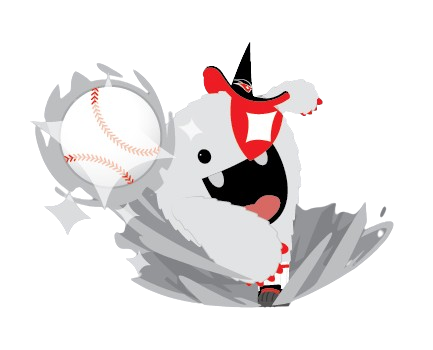

리그 환경 추이 (1982~2025)
리그 평균 ERA · OPS 추이
연도별 ERA+ · OPS+ · wRC+ 1위
⚾ ERA+ 랭킹

| # | 선수명 | 팀 | ERA | IP | W-L | 리그ERA | PF | ERA+ |
|---|

🏏 OPS+ 랭킹
| # | 선수명 | 팀 | AVG | OBP | SLG | OPS | HR | RBI | PF | OPS+ |
|---|
🔍 선수 검색
연도별 랭킹(상위 20명)에 포함된 시즌만 표시됩니다. 동명이인은 이름으로 구분하지 않습니다.
| 연도 | 팀 | ERA+ | OPS+ | wRC+ |
|---|
📈 wRC+ 랭킹
| # | 선수명 | 팀 | AVG | OBP | SLG | OPS | PA | HR | RBI | wOBA | wRAA | PF | wRC+ |
|---|
⚔️ Proxy WAR 타자
Proxy WAR (수비 제외) · UZR/UBR 미포함 근사 WAR
| # | 선수명 | 팀 | Proxy WAR | wOBA | Batting Runs | wSB | Pos Adj | OPS |
|---|
🛡️ Proxy WAR 투수
Proxy WAR (수비 제외) · UZR/UBR 미포함 근사 WAR
| # | 선수명 | 팀 | 보직 | Proxy WAR | ERA | RA9 | IP | W-L |
|---|
🏟️ 파크팩터
💰 FA 적정가
FA 계약 데이터 기반 추정치입니다. (선수명 검색 + 연도 선택)
| # | 선수명 | 포지션 | 유형 | 원소속 | 이적팀 | 기간 | 총액(억) | 가중 WAR | 등급 | 적정 연봉 Low/Mid/High (억/년) |
|---|
📘 KBO 지표 설명 가이드
처음 보는 분도 쉽게 이해할 수 있도록 지표를 분류별로 정리했습니다.
용어 데이터를 불러오는 중입니다.